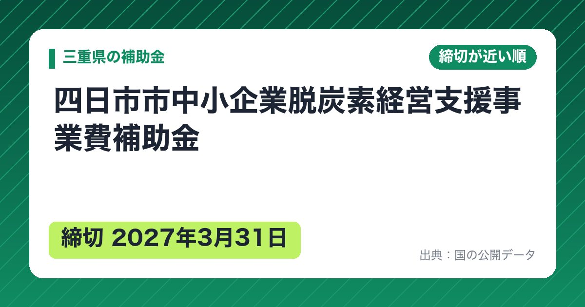

四日市市中小企業脱炭素経営支援事業費補助金

締切 2027年3月31日｜上限 要確認
四日市市では、市内の中小企業者が取り組む温室効果ガスの排出量算定、削減計画の策定及びＳＢＴ認定取得に要する経費の一部を補助することにより、中小企業者等による脱炭素経営の推進を支援します。
概要
| 対象地域 | 四日市市 |
|---|---|
| 補助上限額 | 要確認 |
| 補助率 | 現状把握及び計画策定事業 補助率 ２分の１ 補助上限額 40万円、ＳＢＴ認定取得事業 補助率 ２分の１ 補助上限額 20万円 |
| 受付期間 | 2026年4月1日 〜 2027年3月31日 |
| 対象の従業員数 | 従業員数の制約なし |
| 利用目的 | 新たな事業を行いたい / 販路拡大・海外展開をしたい / イベント・事業運営支援がほしい / 事業を引き継ぎたい / 資金繰りを改善したい / 雇用・職場環境を改善したい / 災害（自然災害、感染症等）支援がほしい / 安全・防災対策支援がほしい / まちづくり・地域振興支援がほしい / 設備整備・IT導入をしたい / エコ・SDGs活動支援がほしい |
| 対象業種 | 漁業 / 建設業 / 製造業 / 電気・ガス・熱供給・水道業 / 情報通信業 / 複合サービス事業 / サービス業（他に分類されないもの） / 公務（他に分類されるものを除く） / 分類不能の産業 / 農業、林業 / 鉱業、採石業、砂利採取業 / 運輸業、郵便業 / 卸売業、小売業 / 金融業、保険業 / 不動産業、物品賃貸業 / 学術研究、専門・技術サービス業 / 宿泊業、飲食サービス業 / 生活関連サービス業、娯楽業 / 教育、学習支援業 / 医療、福祉 |
公募の内容（原文の抜粋）
■目的・概要
市内の中小企業者が取り組む温室効果ガスの排出量算定、削減計 画の策定及びＳＢＴ認定取得に要する経費の一部を補助することにより、中小企業者 による脱炭素経営の推進に資することを目的とする。
■根拠法令
https://www.city.yokkaichi.lg.jp/www/contents/1740105920449/files/youkou.pdf
■応募資格
主たる事業所（国内における従業員総数の２分の１以上の従業員が常時勤務している事業所をいう。）を市内に有し、かつ、市内において１年以上事業を営む次の１～４に掲げる要件をすべて満たす者とする。
中小企業者（中小企業基本法(昭和38年法律第154号)第２条第１項に規定する中小企業者をいう。）又は小規模企業者（中小企業基本法第２条第５項に規定する小規模企業者をいう。）
本市に納税義務のある市税に滞納がないこと。
事業所において行う事業が次のいずれにも該当しないこと。
（１）風俗営業等の規制及び業務の適正化等に関する法律（昭和 23 年法律第 122 号）に基づき、営業の許可又は届出を要する事業
（２）宗教活動又は政治活動を目的とする事業
（３）公序良俗に反する等、市長が不適当と認める事業
次に掲げるいずれかに該当しないこと。
（１）次に掲げるいずれかの法人
ア．暴力団（四日市市市暴力団排除条例（平成23年四日市市市条例第９号）第２条第１号に規定する暴力団をいう。以下同じ。）である者
イ．当該法人の役員が暴力団員（四日市市市暴力団排除条例（平成23年四日市市市条例第９号）第２条第２号に規定する暴力団員をいう。以下同じ。）である者
ウ．暴力団又は暴力団員と密接な関係を有する者
（２）次に掲げるいずれかの個人
ア．暴力団員である者
イ．暴力団又は暴力団員と密接な関係を有する者
注：ただし、下記のいずれかに該当する場合は対象になりません。
発行済株式又は出資の総数又は総額の２分の１以上が同一の大規模法人（資本金の額又は出資の総額が３億円を超える会社並びに常時使用する従業員が300人を超える法人をいう。次についても同じ。）の所有に属しているもの。
発行済株式又は出資の総数又は総額の３分の２以上が大規模法人の所有に属しているもの。
■地理条件
主たる事業所（国内における従業員総数の２分の１以上の従業員が常時勤務している事業所をいう。）を市内に有していること。
■備考
補助対象事業
○現状把握及び計画策定事業
○ＳＢＴ認定取得事業
補助対象経費
○支援機関等へ支払う経費 ・コンサルタントに係る経費 ・診断及び分析に係る経費
○ソフトウェア等導入経費 ・システムソフトウェア導入に係る経費 ・クラウドサービス利用に係る経費
○中小企業向けＳＢＴ認定取得の申請に係る経費
○その他市長が適当と認める経費
申請する際は、下記の書類を環境政策課へ提出してください。
なお、交付申請及び実績報告の際には、申請内容についてヒアリングを行いますので、申請前に必ずご連絡ください。
ヒアリングの日程調整を行わせていただきます。
（１）交付申請について
補助対象事業に着手する前に、次の書類を揃えてご申請ください。
交付申請書（第１号様式）
事業計画書（第１号様式 別紙１）
収支予算書（第１号様式 別紙２）
見積書（補助対象経費が分かるもの）の写し
企業の概要書（企業パンフレット等）
定款の写し
法人の履歴事項全部証明書（個人事業主にあたっては、直近の確定申告書の写し）
市税完納証明書※（発行日から３か月以内のもの）
※税証明の発行については、以下の市民税課ページをご確認ください。https://www.city.yokkaichi.lg.jp/www/genre/1706232505711/index.html
（２）変更（中止・取下）承認申請について
補助対象事業の内容、経費の配分その他の事項の変更（軽微な変更※１を除く）をしようとする場合又は補助対象事業を中止し、若しくは取下しようとする場合は、次の書類を揃えてご申請ください。
変更（中止・取下）承認申請書（第４号様式）
変更内容が確認できる書類
変更収支予算書（第４号様式 別紙）※２
※１：軽微な変更とは、補助金額に変更がなく補助目的の達成に支障がないと認められる場合であって、補助対象経費の各費目における20パーセント以内の変更をいいます。
※２：変更収支予算書は、補助金額の変更がある場合のみ添付ください。
（３）実績報告について
補助対象事業の完了後、30日以内又は当該年度の３月31日のいずれか早い日までに、次の書類を揃えてご申請ください。
実績報告書（第６号様式）
事業報告書（第６号様式 別紙１）
収支決算書（第６号様式 別紙２）
請求書（補助対象経費が分かるもの）の写し
補助対象経費の支払いを証する書類の写し
事業の実施を証する書類（温室効果ガス排出量算定結果の写し、中小企業向けSBT認定の取得を確認できる書類等）
（４）補助金の請求について
実績報告後、交付確定通知書により通知を受けたときは、速やかに次の書類を揃えてご申請ください。
請求書（第８号様式）
■問合せ先
四日市市 環境政策課
〒５１０-８６０１
四日市市諏訪町１番５号（市役所本庁舎５階）
TEL：（０５９）３５４－８１８８ FAX：（０５９）３５４－４４１２
E-mail: kankyouseisaku@city.yokkaichi.mie.jp
■参照URL
https://www.city.yokkaichi.lg.jp/www/contents/1740105920449/index.html
三重県のほかの補助金
- 令和７年度（補正） 商用車等の電動化促進事業（建設機械）（締切 2027年1月29日）
- 四日市市燃料電池自動車導入促進補助金（締切 2027年3月31日）
- 携帯電話等エリア整備事業（締切 2027年3月31日）
- 電波遮へい対策事業（トンネル）（締切 2027年3月31日）
- 【三重県 鈴鹿市】令和8年度創業促進補助金（締切 2027年3月31日）